Field Study · North America · 2026
The American
An exploration of a fragile ecosystem
Observed and narrated by Ran Craycraft
Part I
The Habitat
Corner bar · 9:47 PM · Field log 001
[0:20 to 0:29 · about 25 words]
Since the late 1900s, I've conducted extensive field research into this fragile habitat. Most of it at night. All of it involving beer.
NARRATION: The recorded narrator plays over the title card before this slide, started from your notes window, and reads the opening: across the American landscape, hidden in strip malls, beneath flickering neon, an extraordinary ecosystem survives, ending on "This is the American dive bar." It plays over your footage from Jimmy's Corner, steadied and slowed to three-quarter speed, and the title card fades in on it. The bar sound dips under it. You pick up here on slide 1.
VISUAL NOTE: The title card before this slide already names the talk, so this opening shot works like a documentary's first scene. Change the time or field log number to match a real night if you like.
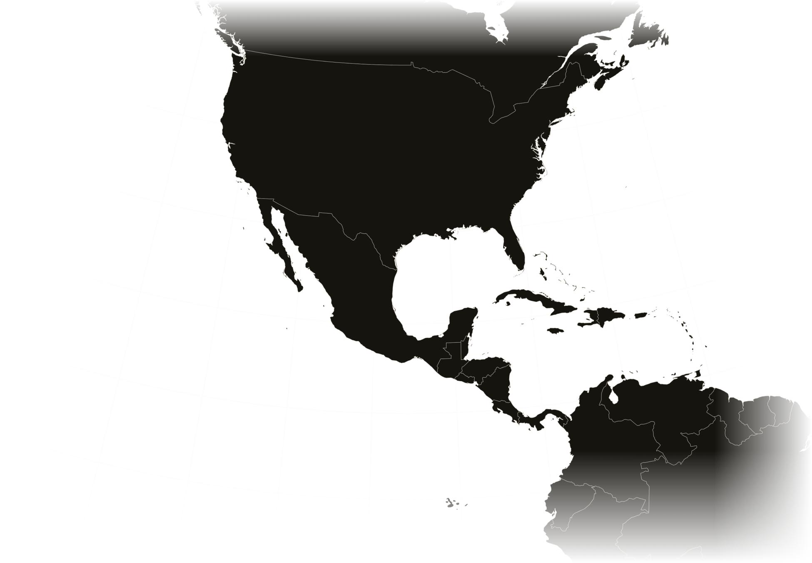
Range
1999 – 2026
68 cities · survey ongoing
[0:29 to 0:43 · about 35 words]
Sixty-eight cities explored, with many dives documented in each, from Vancouver to Guayaquil, spanning both American continents, yet the survey continues to this day.
The US government counts drinking places. However, it has no category for a dive. Diveus americanus remains today, unrecognized by science.
The word itself was never a compliment. By the late 1860s, American newspapers were calling a disreputable drinking den a "dive," possibly because so many of them sat a flight below the street.
TO DO: The dots mark 68 cities you named: Seattle, Vancouver, Portland, Ontario (placed at Toronto), Montreal, New York, Atlantic City, Las Vegas, Fort Lauderdale, Tampa, Marathon, Islamorada, Miami, Austin, Cincinnati, Cleveland, Detroit, Great Falls, Boise, Victor, Redondo Beach, San Francisco, Louisville, Beckley, Huntington, Denver, Colorado Springs, Madison, Mineral Point, Los Angeles, Mexico City, Mérida, Cancún, Guayaquil, Cabo San Lucas, Dallas, Jackson (Montana), Dubuque, Pittsburgh, Nashville, Memphis, Wilmington (North Carolina), North Myrtle Beach, Tallahassee, Washington D.C., Boston, Providence, Philadelphia, Biloxi, Phoenix, Tucson, Tombstone, San Diego, Riverside, Tijuana, Rosarito, Ensenada, Portsmouth (Ohio), Ashland (Kentucky), Quito, Dayton, New Orleans, Albany, Syracuse, Nassau (Bahamas), Acapulco, San Juan (Puerto Rico) and St. Augustine. Each dot is its own shape, so add more as the survey continues.
SOURCES: U.S. Census Bureau NAICS code 722410, "Drinking Places (Alcoholic Beverages)," has no dive-bar subcategory. Earliest noun use of "dive" for a disreputable establishment, National Police Gazette, Jan. 12, 1867 (via Barry Popik). OED defines the U.S. sense as a drinking den "often situated in a cellar, basement, or other half-concealed place." The basement origin is likely, not certain, which is why the narration says "possibly."
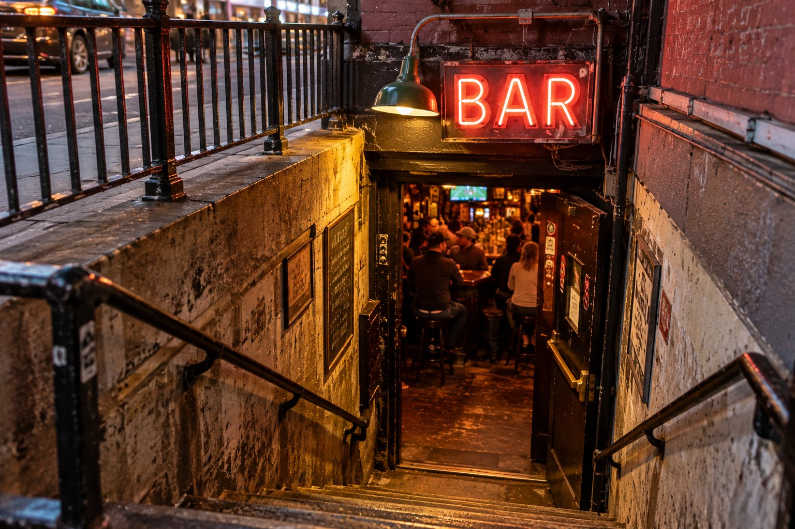
Etymology
Dive
American slang · 1860s
A flight below the street
[film only]
The word itself was never a compliment.
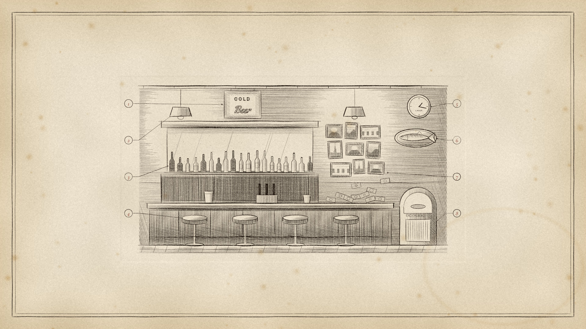
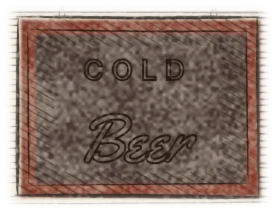
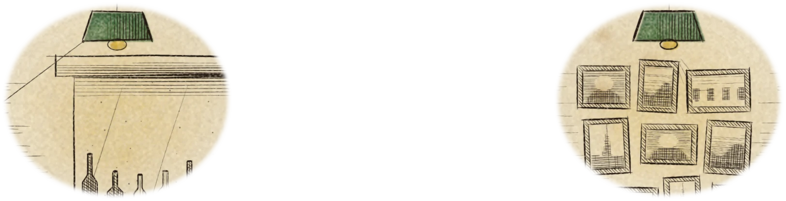
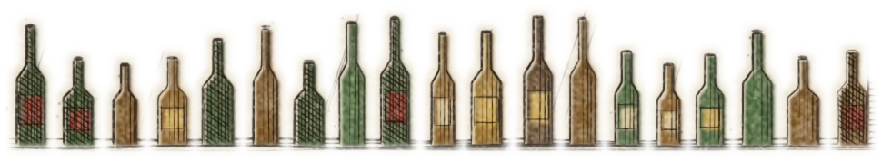
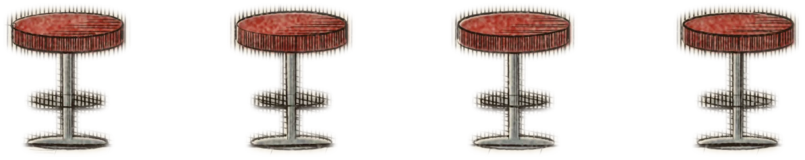
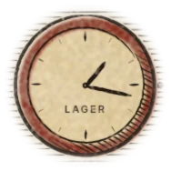
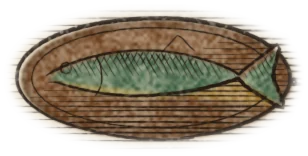
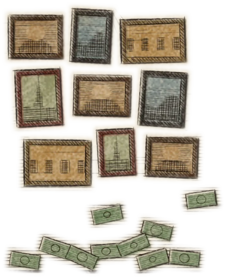
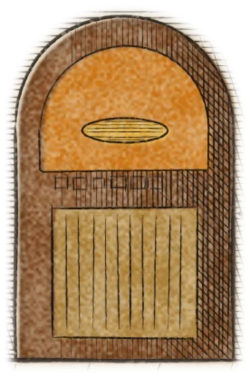
Plate III
A Natural History of the American Dive
Diveus americanus
Anatomy of a Dive
Fig. 1. Interior, lateral section. Engraved from life.
Lumen obscurum
Low ambient light
Reservoir lagerum
Domestic lager supply
Sedes territorialis
Territorial seating
Horologium cerevisiae
Brewery-issued clock
Artefactum inexplicatum
Unexplained artifact
Paries accumulatus
Gifts left by patrons
❦
The Law of Accumulation
“The authenticity of a dive bar appears positively correlated with the number
[0:43 to 1:29 · about 115 words]
Let us examine a specimen up close. Every healthy dive shares eight organs.
(click) An old neon sign. (click) Light dim enough to forgive you and what you might've seen. (click) Beer at exactly one temperature. (click) A stool that belongs to someone, even when they're not sitting on it.
(click) The beer clock. After Prohibition, Congress barred brewers from giving bar owners anything of value...unless it carried the brewer's name on it. A free clock would be a bribe. A free clock with a beer's name on it...is marketing.
Then hanging on the wall, there is also (click) the thing nobody can explain, (click) there are personal objects left behind as gifts from patrons, and of course, (click) an analog jukebox to create the unique soundtrack found only in this dive.
A real dive is not decorated. It accumulates.
VISUAL NOTE: This plate is an original engraving-style illustration in the manner of a 19th-century anatomy atlas. The neon sign is drawn in ink. It stays dark until the first click, flickers on while it is circled, and goes dark again when you move to the next organ. The leader lines are part of the image. All eight labels show from the start. Each click circles the next organ on the plate and brings its label forward, 1 to 8.
SOURCES: Pre-Prohibition tied houses received "bar fixtures," "branded backbars" and "brewery-branded mirrors and hardware" (Whiting-Robertsdale Historical Society, "The Tied House System That Left Its Mark on Whiting"). Federal Alcohol Administration Act of 1935, section 205(b) (27 U.S.C. 205): suppliers may not induce retailers with things of value (the "tied house" provision). Brewers Association, "Tied House Laws": temperance campaigners used "tied house" against brewer-controlled saloons, which helped bring Prohibition; federal rules bar suppliers from giving retailers cash, equipment or other goods, with exceptions for advertising materials. 27 CFR 6.102: outside signs must carry conspicuous advertising and cost no more than $400. 27 CFR 6.83: product displays are limited to $300 per brand at a time in one retail establishment. 27 CFR 6.84 lets industry members give retailers point-of-sale materials such as "inside signs," "back bar mats," "clocks, calendars" and menus, provided they carry conspicuous advertising. The Law of Accumulation and the Latin anatomy terms are our own invention, presented as such.
Ancestral species
The Lineage
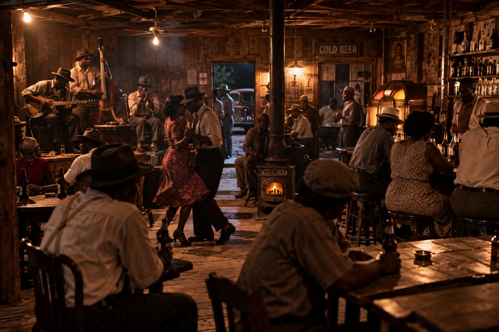
The Jim Crow South
The Juke Joint
Diveus jukeus
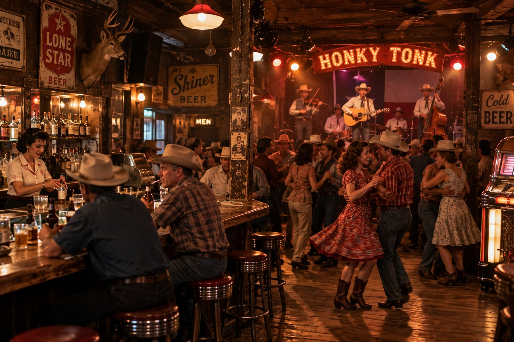
Cattle and oil towns of the Southwest
The Honky-Tonk
Diveus honkytonkus
[1:29 to 2:05 · about 90 words]
Every known species has ancestors.
For the dive bar, it may be the juke joint. In the Jim Crow South, Black workers were shut out of white establishments, so they built their own. An unassuming shack at a crossroads. Music, food, and dancing after a long week.
Some historians call this the first private space Black Americans had in this country. The blues grew up there. When record machines came to bars, they took its name. The jukebox.
(pause)
Out west, the honky-tonk was born. Country music is said to have gone electric partly so it could be heard over the rowdy noise.
TONE NOTE: Play the juke joint straight. This is the one moment in the talk where the history carries more weight than the joke.
SOURCES: Wikipedia, "Juke joint": juke joints were primarily operated by African Americans in the Southeast, at rural crossroads and town outskirts, often in abandoned buildings or private houses; sharecroppers and plantation workers were barred from most white establishments by Jim Crow laws; they offered music, dancing, drinking, food and gambling; they "may be considered the first 'private space' for black people in the United States"; Robert Johnson, Son House and Charley Patton "traveled the juke joint circuit, scraping out a living on tips and free meals"; "juke" is believed to come from the Gullah joog, meaning rowdy or disorderly. Mississippi Encyclopedia, "Juke Joints and Honky Tonks": juke joints as spaces where Black Americans could gather without white supervision under Jim Crow, and their tie to the blues; Hurston called the juke joint "the most important place in America" musically. Wikipedia, "Jukebox": the term came into use around 1940 from "juke joint," and manufacturers avoided it for years. Wikipedia, "Honky-tonk": earliest known print use June 28, 1874 (Peoria Journal), origin unknown; honky-tonks grew in oil boom and cattle towns of Texas, Oklahoma and Louisiana; electric instruments adopted early to cut through bar noise. The origin of "juke" itself is uncertain; competing theories exist.
01
The Neighborhood Dive
Diveus communalis
[2:05 to 2:20 · about 35 words]
Our research has identified three remaining species today.
The most widespread is the Neighborhood Dive. Its defining trait is community. The bartender may even start pouring before your order is complete. Some regulars have been observed changing the music. Others, the keg.
PHOTO DIRECTION: Your photo of a neighborhood bar on a snowy afternoon.
Specimen · The Neighborhood Dive
McSorley’s Old Ale House
New York, New York
1854
Founded, by its own account
1986
A ladies’ room arrives
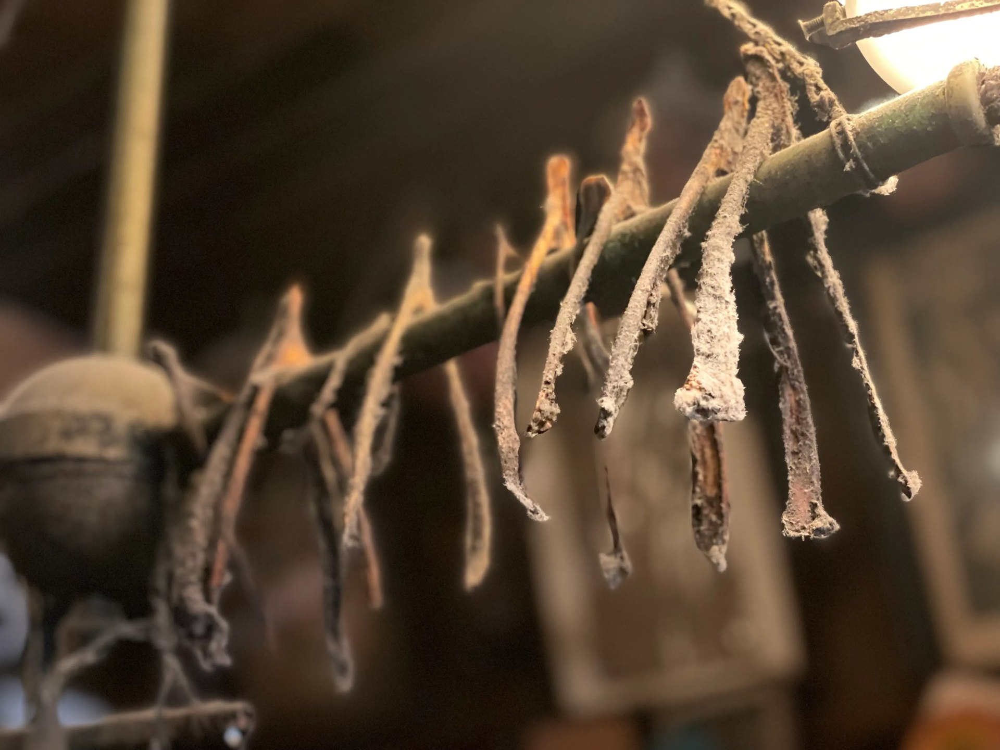
The wishbones · McSorley’s Old Ale House
[2:20 to 2:45 · about 60 words]
Here is the Neighborhood Dive in its oldest form. McSorley's Old Ale House in New York's East Village. It claims a birth in 1854 and historic patrons, Abraham Lincoln, Ulysses S. Grant, Teddy Roosevelt, and William Jefferson Clinton.
It served men only until 1970, when two lawyers sued and won.
Above the bar hang wishbones, said to have been left by soldiers heading to the First World War. The ones still hanging are said to belong to those who never came back.
(let that sit for a beat)
PHOTO: Your photo of McSorley's, with the stove and sawdust floor, runs full-bleed behind the slide, darkened at the top so the text reads.
SOURCES: Wikipedia, "McSorley's Old Ale House": claimed founding 1854, evidence second-hand; the site appears vacant 1860 to 1861 and city records date the building no earlier than 1858; women first admitted August 10, 1970 after Seidenberg v. McSorley's Old Ale House (S.D.N.Y. 1970), brought by NOW attorneys Faith Seidenberg and Karen DeCrow; ladies' room installed 1986; wishbones traditionally said to be hung by men leaving for World War I, a story the page notes is disputed (Joseph Mitchell suggested the founder simply saved them).
02
The Working-Class Dive
Diveus laboriosus
[4:02 to 4:29 · about 65 words]
In older industrial towns, we find a hardier relative. The Working-Class Dive. Diveus laboriosus.
Its defining trait is routine. Activity peaks at shift change. Same people. Same stools. Same drinks. Same time.
Researchers have observed individual specimens occupying the same stool for decades. Removing the stool could result in severe ecological disruption.
Related species are glimpsed only briefly. The Sports Dive. The VFW post. The bowling-alley bar.
PHOTO DIRECTION: Your photo of a working-class bar at night, with work jackets on the hooks by the door.
03
The Destination Dive
Diveus remotus
[2:45 to 3:12 · about 65 words]
The Destination Dive. Found on back roads, coastlines, and generally, at the ends of things.
This is Jimbo's Place, tucked behind a water treatment plant on Virginia Key in Miami. When I first encountered Jimbo's over two decades ago, they kept no bartender, only a caretaker who occasionally surfaced to restore the habitat, and an old fisherman grilling fresh oysters for guests over a burning barrel. You paid in cash through a slot in a lockbox and pulled your own beer from the cooler.
That's not a business. That's a community.
FOLKLORE FLAG: The Jimbo's honor-system lockbox is your own eyewitness memory; news coverage doesn't describe how payment worked, so it's told as your field note.
PHOTO DIRECTION: Your photo of Jimbo's Place on Virginia Key. It ties forward to the Jimbo's card on the Local Adaptations slide.
JIMBO'S SOURCES: NBC Miami (March 15, 2012) and CBS Miami (March 20, 2012): James "Jimbo" Luznar opened Jimbo's on Virginia Key in 1954; the city closed it in March 2012.
Specimen · The Destination Dive
The Currency Ceiling
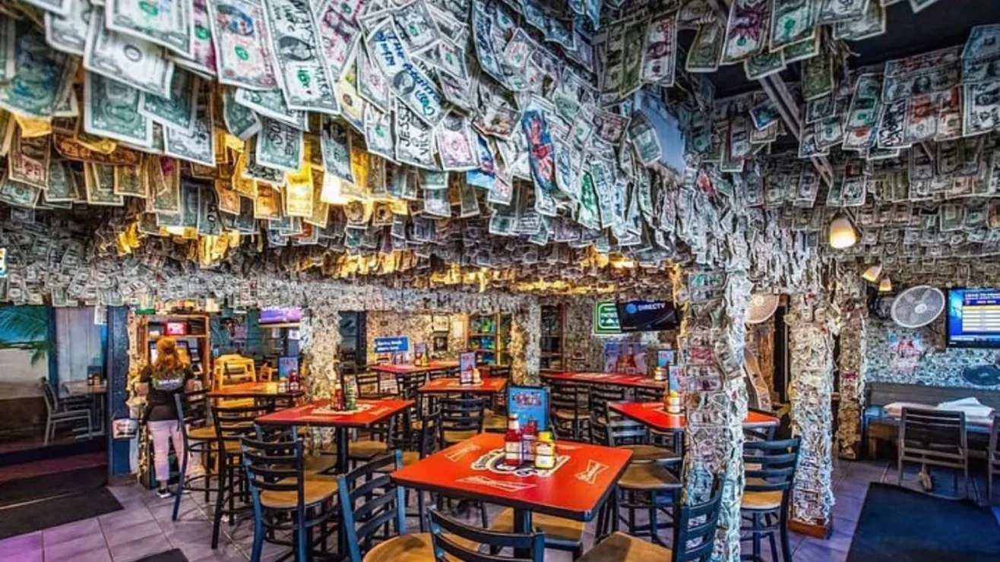
$13,961
Siesta Key Oyster Bar · Sarasota, Florida · 2019
[4:49 to 5:34 · about 115 words]
Why money? Scientists remain divided.
In California's Gold Country, regulars tell of miners who signed a bill and tacked it to the ceiling, so they would never come back too broke for a first drink. On the Florida coast, the story involves fishermen, betting a dollar on the day's catch. Aviators had a cousin of the custom. Signed bills called short snorters. Fail to produce yours, and you bought the round.
The true origin may be unrecoverable.
The money is not. In 2019, staff at the Siesta Key Oyster Bar pulled every bill off the walls. Thirteen thousand, nine hundred and sixty-one dollars. All of it sent to hurricane relief in the Bahamas.
PHOTO DIRECTION: Your photo of a coastal bar papered floor to ceiling in dollar bills. It is an illustration of the habit, not a picture of the Siesta Key bar the slide cites.
04
The Biker Bar
Diveus motorcyclus
[3:12 to 3:27 · about 35 words]
The Biker Bar. Identified by the precise row of motorcycles out front.
Despite its reputation, Diveus motorcyclus is among the most courteous habitats on the continent.
Researchers are advised to admire the bikes. Never touch the bikes.
AUDIO: In the web presentation, your own biker bar field recording starts on this slide and carries through the late-night slides.
PHOTO DIRECTION: Your photo of the row of bikes outside a desert roadhouse at sunset.
05
The Late-Night Dive
Diveus nocturnus
Restaurants
Concerts
Weddings
Other bars, closed
Hospitality workers
Dive Bar
1:17 AM
[5:58 to 6:38 · about 100 words]
Our final species is rarely seen in daylight. The Late-Night Dive. Diveus nocturnus.
As midnight approaches, scattered populations begin their nightly migration toward a common watering hole. Restaurant staff, finished with their shifts. Concertgoers. Wedding guests. Patrons of lesser bars that have already closed.
By 1:17 a.m., they converge. Here, together, they will make increasingly questionable decisions.
The migration has an earlier phase. Happy hour. The term began among sailors aboard the USS Arkansas in 1913, and caught on during Prohibition as a drink before dinner at the speakeasy. In Massachusetts, it has been illegal since 1984.
Boston simply has hours.
HAPPY HOUR SOURCES: Wikipedia, "Happy hour": by June 1913 the crew of USS Arkansas called regular onboard gatherings "happy hours"; the pre-dinner drink custom has roots in Prohibition-era speakeasies. Mondaq, "Are You Happy Now? The Status of Massachusetts Happy Hour Laws" (2019): Massachusetts became the first state to ban happy hours in 1984 (204 CMR 4), after a 1983 drunk-driving death. GBH News (June 10, 2026): the ban is still in place; Gov. Healey has said she would support removing it. The ban is statewide, not only Boston.
VISUAL NOTE: The map is an abstract city, not a real one. If you want it to be your city, a dark-mode screenshot of a real street map works as a replacement. The labels are separate text boxes, so you can move them.
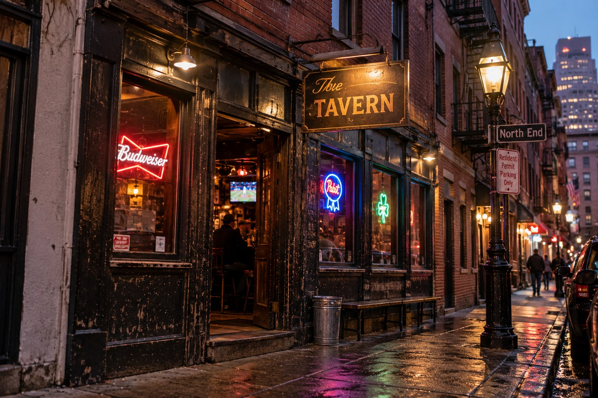
Behavioral note
Happy Hour
1984
Banned in Massachusetts
[film only]
The migration has an earlier phase. Happy hour.
Fauna of the American Dive
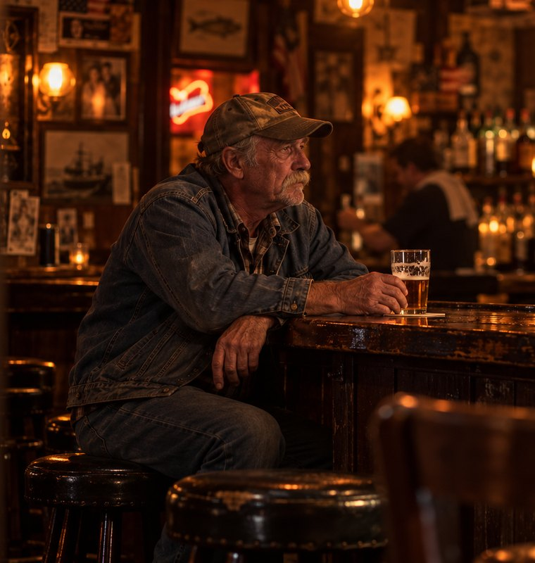
The Regular
Homo regularis
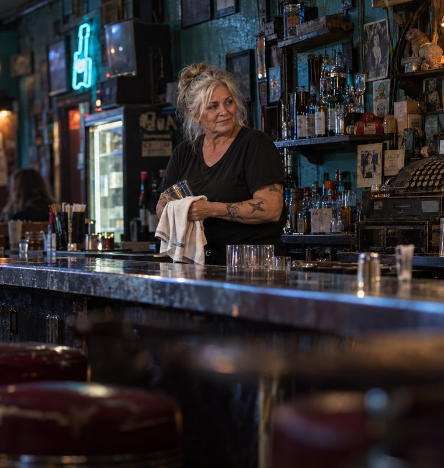
The Bartender
Minister potus
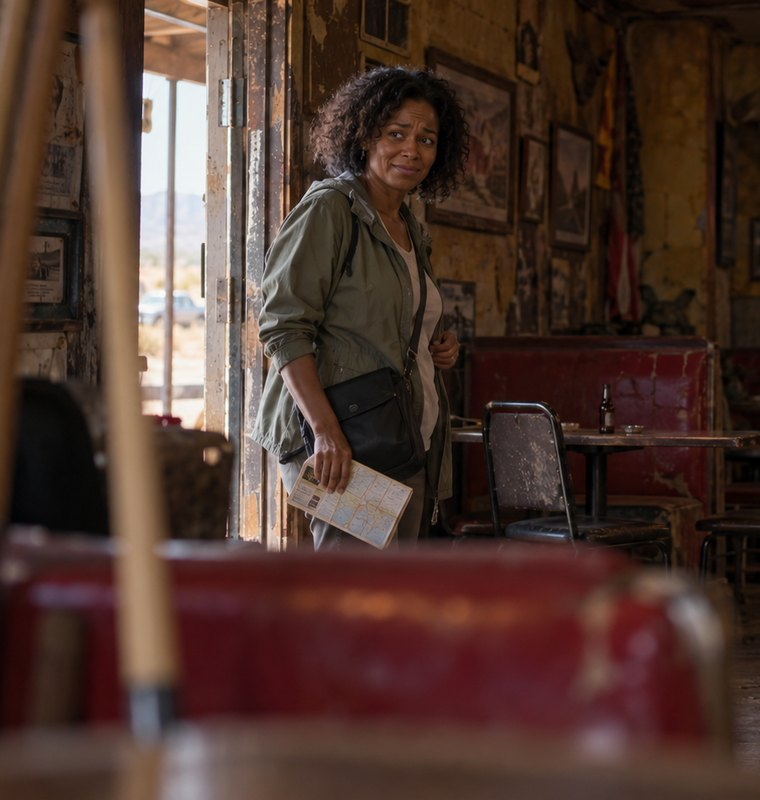
The Tourist
Homo peregrinus
The Bachelorette Party
Homo celebrans
[3:27 to 3:42 · about 40 words]
Every habitat supports its fauna.
The Regular. Territorial. (click) The Bartender, the apex species, controlling access to all resources. (click) The Tourist, identified by looking around too much.
(click) And the Bachelorette Party. Native species are known to retreat until the disturbance has passed.
PHOTO DIRECTION: Four tight portraits, one per type, in matching warm low light. Real people need their permission. Silhouettes, hands on a bar, or a back-of-head shot also work and keep everyone anonymous. All four are your photos.
Regional behavior
Local Adaptations
Chicago
The Tied House
Diveus domesticus
Wisconsin
Shake of the Day
Diveus aleator
[6:59 to 7:42 · about 105 words]
Every population adapts to its environment.
In Chicago, remember the tied houses? Between 1897 and 1905, Schlitz alone built fifty-seven saloons here. Beer on the ground floor, apartments upstairs, often the family who ran the place. Many still stand. Look for the brewery's belted globe on the brick. The local ritual is the Chicago Handshake. A shot of Malört, which tastes like a punishment, and an Old Style to recover.
In Wisconsin, the dice cup lives on the bar. Shake of the Day: beat the bartender, and the next one's free. When three Milwaukee bars tried to ban the dice in 2016, the ban lasted two days.
PHOTO DIRECTION: No photos needed. If you have your own shot of a Chicago corner tavern with apartments above, or a dice cup on a Wisconsin bar, any one of them could replace a card.
SOURCES: Chicago Commission on Chicago Landmarks, "Five Brewery Tied Houses and One Brewery Stable" and "1393 W. Lake St. Schlitz Brewery Tied House" (2021): brewery ownership of Chicago saloons began in 1892; Schlitz built 57 tied houses in the city from 1897 to 1905; buildings followed a "store and flat" form with apartments above; upper-floor apartments "often housed the saloonkeeper and his family"; the belted-globe emblem derives from Richard Bock's Schlitz display at the 1893 World's Columbian Exposition; over forty brewery tied houses survive. WBEZ Curious City, "Why is Malört popular in Chicago?" (July 6, 2023): Carl Jeppson sold Swedish-style bitters in the 1920s marketed as a tonic; the Chicago Handshake is "the iconic pairing of a Malört shot with an Old Style beer," common at dive bars. Malört.com brand history: production returned to Chicago in 2019 under CH Distillery. Punch, "How Bar Dice Became a Wisconsin Institution" (2018): Shake of the Day is played against the bartender for the drink being ordered or a growing pot; bar historian Jim Draeger dates the game's popularity to at least the end of Prohibition. OnMilwaukee (Jan. 29, 2016): three bars' management discontinued bar dice on a Monday and reversed the ban by Wednesday.
The genus beyond the border
Related Populations
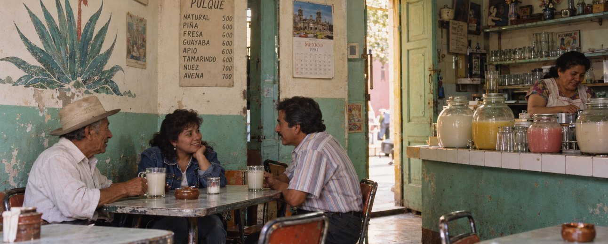
Mexico
The Pulquería
Diveus pulquerius
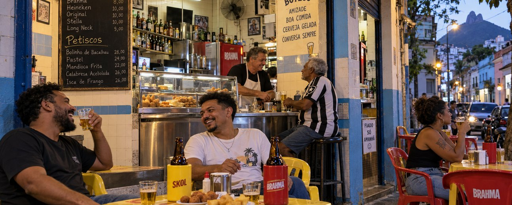
Brazil
The Boteco
Diveus botequinus
[3:42 to 4:09 · about 70 words]
The genus doesn't stop at the United States border.
In Mexico, the pulquería, serving the fermented agave drink the Aztecs held sacred long before the invention of tequila and mezcal. Mexico City once counted about 1,100 pulquerías. Until beer companies and the government, spent decades disparaging pulque as unclean and a poor man’s drink. Today, only 80 pulquerías remain.
(click) In Brazil, the boteco, where bars in 25 cities compete every year in the Comida di Buteco, to name Brazil's best snack and coldest beer.
SOURCES: Punch, "A Pulque Revolution Brews in Mexico City": pulque's Aztec ritual role; pulquerías "once estimated at 1,100" (the estimate is undated), about 80 by the start of the 21st century; decline tied to a decades-long campaign by beer companies and the government depicting pulque as "a crass, poor man's drink"; the stigma lasted into the 1990s. Rio de Janeiro by Cariocas: botecos began in 19th-century Rio with Portuguese port warehouses; Comida di Buteco, created in 1999 in Belo Horizonte, now has botecos in 25 cities competing, judged on snack, service, hygiene and drink temperature.
The third place
Where a neighborhood meets itself Survey Center on American Life, American Community Life Survey, June–July 2020, n = 5,058
[4:09 to 4:28 · about 50 words]
Sociologist Ray Oldenburg defines these as third places. Home is the first. Work is the second.
In a national survey, Americans who identified with a regular spot were far more likely to talk with someone they don't know well. Forty-eight percent.
(click) Versus only twenty-eight percent for those with no regular third place at all.
BUILD: The 28% fades in on click.
SOURCES: Daniel A. Cox, Ryan Streeter, Samuel J. Abrams, Beatrice Lee and Dana Popky, "Public Places and Commercial Spaces: How Neighborhood Amenities Foster Trust and Connection in American Communities," Survey Center on American Life (AEI), Oct. 20, 2021. Survey fielded June 11 to July 1, 2020, n = 5,058, NORC AmeriSpeak panel. Exact measure: talking with someone they don't know well at least once or twice a month. 48% among those with a regular spot where they generally recognize people, 28% among those with no regular place (30% among those with a spot but who don't recognize people). Caveat: "regular spot" includes coffee shops, restaurants, bars and other places, not bars alone. In the same survey, 29% of those with a regular spot named a restaurant or bar. "Third place" comes from Ray Oldenburg, The Great Good Place (1989).
Diveus artificialis
The False Dive
A mimic
[4:28 to 4:41 · about 35 words]
In your explorations, beware diveus artificialis, the False Dive. Its camouflage can be quickly identified by its Edison bulbs, its custom neon signs with clever phrases. And of course, a signature $17 cocktail.
While attempts have been made to breed the false dive in captivity, they have largely failed.
PHOTO DIRECTION: The most suspiciously perfect "dive" you can find. Edison bulbs, a coupe glass, subway tile, merch for sale by the door. Shoot it beautifully. The joke lands better if it looks good. Avoid showing a recognizable venue's name or logo. The current image is your martini-under-Edison-bulbs shot.
The walls, the clutter, the whole feel of the place
Did it accumulate?
or was it purchased?
[4:41 to 4:47 · about 15 words]
Today, there is one simple diagnostic for a dive bar.
Did this accumulate? Or was it purchased?
(Let the slide sit for three full seconds. Say nothing.)
Observing without disturbing
Field Protocol
02
A beer, a shot, or two ingredients.
03
Read the room before the jukebox.
04
Note how seriously they play pool.
05
The restroom is for number one.
[4:47 to 5:22 · about 90 words]
If your curiosity takes over and you decide to explore a dive bar for yourself, here are a few protocols to observe.
(click) Arrive with no more than three other people.
(click) A beer, a shot, or a drink with two ingredients. Never order a fancy cocktail.
(click) Read the room before you touch the jukebox.
(click) Watch how seriously they play pool. Mimic accordingly.
(click) The restroom is only for number one. Number two means it's time to go home.
(beat)
(click) And finally, always bring cash. If they don't take cards, be delighted. You have just encountered one of the last remaining American dive bars.
VISUAL NOTE: These are your own field rules, presented as the researcher's opinion. Nothing here needs a source.
[5:22 to 5:40 · about 45 words]
No one has ever counted all of America's dive bars, while many have tried. But the pressures today are real. Rising rents. Redevelopment. Fewer drinkers.
You can open a bar tomorrow. But you cannot open a seventy-year-old bar tomorrow.
(wait a beat)
Do you see that stool over there? That's Gary's seat. It took him decades to earn it.
PHOTO DIRECTION: Your photo of Gary's seat, the thing you cannot open tomorrow.
SOURCES: Gallup, 2025 Consumption Habits survey, 54% of U.S. adults say they drink alcohol, one point below the previous low (1958) in a trend dating to 1939 (reported by NPR via Michigan Public, Aug. 13, 2025). Survey Center on American Life, "Disconnected: The Growing Class Divide in American Civic Life" (Aug. 2024, n = 6,597): about 21% of Americans report no access to any of ten kinds of community gathering places. No federal source tracks dive bar openings or closures; the slide makes no closure claim for that reason. The rents, redevelopment and aging-owner pressures are offered as commonly cited pressures, not measured rates.
Diveus americanus
Conservation status Threatened
Respect the habitat.
Don’t sit in Gary’s seat.
[5:40 to 5:53 · about 35 words]
A great dive bar isn't designed. It evolves.
So if you find one in the wild, approach it respectfully. Order something simple.
And whatever you do...
(click: the screen goes black)
Respect the habitat. Don't sit in Gary's seat.
(End. Don't say thank you until they stop laughing.)
BUILD: The black end card fades in on click, over the photo. "Threatened" is a documentary conceit, not a real conservation designation.
PHOTO DIRECTION: Your photo of a brick corner tavern at dusk, with a brewery's name carved into the facade, a quiet echo of the tied houses.